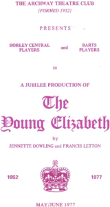

Act 4
As mentioned in Act III, Barts Players performed their first play on the Archway stage in 1957. 
From then on the Archway became their home for staging plays. Their scenery, costumes and props, however, had still to be stored elsewhere including the Church Rooms in Albert Road and Horley Row, and the Bunkell’s house in Russell Crescent. The annual pantomime was still staged at the Constitutional Hall.
When this hall was demolished following Babes In The Wood in 1960 (no connection – demolition had been planned before the panto started!) Barts then moved their annual panto to the Empire Hall.
For the 1965 panto however, David White felt that the Archway stage was a possibility. He was always one for a challenge and thus it was that in January 1965, Barts Players performed Sleeping Beauty with numerous scene changes and a large cast on the Archway stage. From then on an annual panto or play for children has been the regular January spot on the Archway calendar.
During the early years of the Archway Theatre, Barts and Horley Central Players occasionally combined for joint productions. These included:
- 1959 The Shaw Festival
- 1964 Much Ado About Nothing
- 1967 The Wesker Trilogy
- 1969 The Workhouse Donkey
- 1972 The Stoppard Festival
In 1977, to celebrate not only the Silver Jubilee of Queen Elizabeth II but also 25 years underneath the arches, there was a joint production of The Young Elizabeth. If you want to know more about the play, speak to Miles Beauchamp, Nancy Clermont or Margaret Morris as they were all in the cast.
Written by Bette Bunkell – 2002